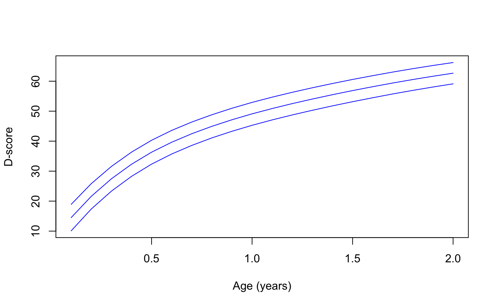

The daz() function calculated the
"Development for Age Z-score".
The DAZ represents a child's D-score after adjusting
for age by an external age-conditional reference.
The zad() is the inverse of daz(): Given age and
the Z-score, it finds the raw D-score.
daz(d, x = as.numeric(names(d)), reference = get_reference(), dec = 3)
zad(z, x = as.numeric(names(z)), reference = get_reference(), dec = 2)Vector of D-scores
Vector of ages (decimal age)
A data.frame with the LMS reference values.
The default uses the get_reference() function. This selects
a subset of rows from the builtin_references using its
default pop argument.
The number of decimals (default dec = 3).
Vector of standard deviation scores (DAZ)
The daz() function return a named vector with
Z-scores with length(d) elements
The zad() function returns a vector with D-scores
with length(z) elements.
Cole TJ, Green PJ (1992). Smoothing reference centile curves: The LMS method and penalized likelihood. Statistics in Medicine, 11(10), 1305-1319.
# using gcdg-reference
daz(d = c(35, 50), x = c(0.5, 1.0))
#> 0.5 1
#> -0.425 0.299
# using Dutch reference
daz(d = c(35, 50), x = c(0.5, 1.0), reference = get_reference("dutch"))
#> 0.5 1
#> -0.091 0.357
# population median at ages 0.5, 1 and 2 years, gcdg reference
zad(z = rep(0, 3), x = c(0.5, 1, 2))
#> 0.5 1 2
#> 36.32 49.11 62.67
# population median at ages 0.5, 1 and 2 years, dutch reference
zad(z = rep(0, 3), x = c(0.5, 1, 2), reference = get_reference("dutch"))
#> 0.5 1 2
#> 35.27 48.91 63.77
# percentiles of D-score reference
g <- expand.grid(age = seq(0.1, 2, 0.1), p = c(0.1, 0.5, 0.9))
d <- zad(z = qnorm(g$p), x = g$age)
matplot(
x = matrix(g$age, ncol = 3), y = matrix(d, ncol = 3), type = "l",
lty = 1, col = "blue", xlab = "Age (years)", ylab = "D-score"
)
